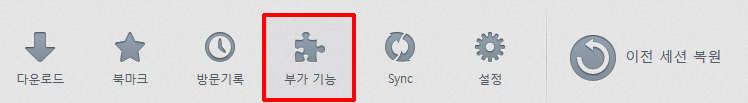
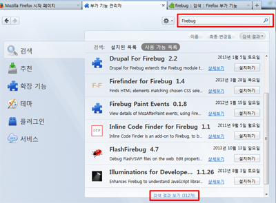
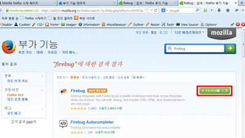
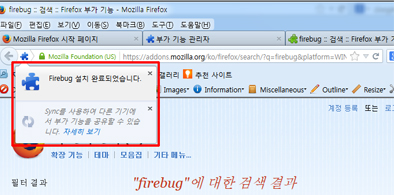
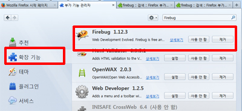
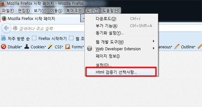
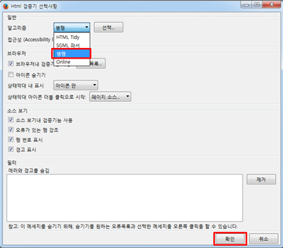
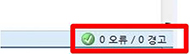
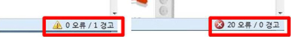
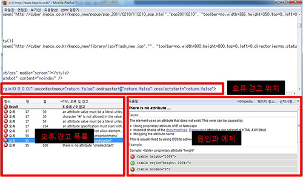

파이어폭스 설치방법
파이어폭스 설치방법
문서버젼(서버접속후)
브라우저 부가기능 설치방법.pptx
1. 파이어폭스 설치
2. 부가기능 설치
3. 부가기능 설치
1) 파이어폭스 하단에 부가기능 클릭

2) 검색하기 (하단에 검색결과 더보기를 눌러주세요)
- Html Validator
- Firebug

3) 초록색버튼에 Firefox라고 적혀진 버튼을 누르기

4) 상단에 설치가완료되었습니다.

5) 왼쪽메뉴에 확장기능을 누르면 설치된 부가기능이 보입니다.

6) 설치후 상단메뉴에서 [도구 - Html검증기 선택사항] 을 누른다.

7) 병행선택 후 확인

4.오류체크
-페이지 하단에 오류여부가 나타난다.
1) 오류표시
- 오류 없는 경우

- 오류 있는 경우

2) 경고 또는 오류 찾기(오류는 반드시 수정, 경고는 준수)
- 해당 페이지의 우측 하단의 상태표시줄에 경고 또는 오류표시가 된 부분을 더블 클릭한다.
- 해당 페이지의 오류를 원인을 찾고 해결하면 다음페이지로 넘어간다.
